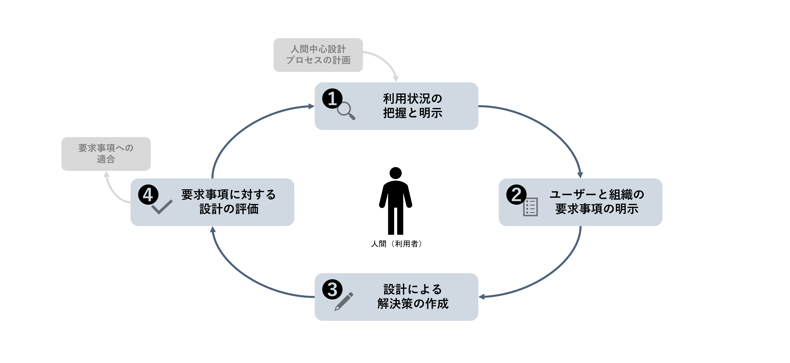

一年授業紹介
-
コーディング力
．HTML＆CSS
HTML（エイチティーエムエル、HyperText Markup Language） は、ウェブページを作成するために開発された言語です。 現在、インターネット 上で公開されてるウェブページのほとんどは、HTMLで作成されています。 CSS（Cascading Style Sheets）とは、Webサイトのサイズや色、 レイアウトなどを設定するためのプログラミング言語です。背景の色の変更や画像の設置、 文字のフォントや色などの幅広いデザインを定義する際に使用されます。

．JavaScript実習
JavaScriptとは、簡単に言えば、ウェブページにインタラクティブな機能や動的コンテンツを追加する、 人気のスクリプト言語です。よく知られているJavaScriptコンテンツの例としては、フォーム、フォトギャラリー、 画像スライドショー、アニメーションなどがあります。 また、JavaScriptはわりと直感的でわかりやすく、学習しやすいのが特徴です。 ウェブサイト制作初心者の方が最初に学ぶのにぴったりです。 JavaScriptを学ぶ際には、HTML、CSS、JavaScriptの関係を理解し、 それらがどのように組み合わさりサイトが表示されるのかを知る必要があります。

．Webアプリケーション制作
この授業では主にReactを用いてWebアプリケーションやデスクトップアプリケーションの作成方法を学習し、 同時にNode.jsやそのエコシステムの利用方法を学習することを目的とする。 Reactを用いて簡単なWebアプリケーションやデスクトップアプリケーションを作成することが出来る。
-
デザイン力
．UI/UX実習
UI（ユーザーインターフェース）とは、ホームページ内で閲覧する、 もしくは操作する要素のことです。 一方で、UI（ユーザーインターフェイス）とは、ユーザーとの間に現れるサービスやプロダクトの外観を表す言葉です。 UX（ユーザーエクスペリエンス）とは、ホームページを利用したときのユーザー体験（得られる感情）のことです。 たとえば、ユーザーが棚に並んだ商品を選んで購入し、使用したのち、 また購入したいと思うまでの工程すべてが「ユーザー体験」、つまり UXとして捉えられます。
．イラストレーション
基本的な描画・着彩表現の実践を通してイラストレーションの表現力を高めること、 Web制作における視覚伝達の基礎力を体得することを目的とする。 提案するときに即時に下書きを描く時があって、イラストレーションで基礎の表現力を鍛える。 全ての授業の中に最も癒しの授業です。
．色彩演習
色彩検定3級の合格を目指し、色彩の基礎知識を身につけながら、デザインに活かせる色彩力を高める。 授業で色を学ぶことができ......、学ぶことでセンスがよくなり、大いに利用することができます。 色にはさまざまな特徴があり、理論や法則が明確に存在しています。そうした色のルールに従って色を選べば、 自分が好きではない色や普段使わないような色も、自由に使いこなすことができるのです。
．情報デザインI
人間中心設計、デザイン思考の考え方に基づき、ユーザー観察、ユーザー調査の手法、 ユーザーに提供する新しい価値についてのアイデア手法、ペルソナ・シナリオ手法、 ペーパープロトタイプよる評価手法などについて学ぶ。 PBL形式の授業で手法解説に続き学生自らが体験を通して発想方法を主体的に学ぶ。 デザイン思考のフレームを理解し、UXUI設計に生かせるようになる。
- 
．サイト設計
サイト設計における情報アーキテクチャの役割を理解した上で、 クライアントとユーザー双方のニーズを満たしたWebサイトの企画および設計を行えることを目的とする。 IA（インフォメーションアーキテクト）の知識を活かして適切にサイト全体の情報設計、 画面設計を行う事が出来る。 調査やヒアリングから課題を抽出し、最適なUXDを見出しWebサイトの企画と設計に落とし込む事ができる。

．写真撮影/映像演出技法
カメラの基本原理を理解して目的応じた様々な場面での撮影方法を学習することを目的とする。 Web等に掲載する写真で物撮りや人物などを目的に応じて得たい写真を撮ることが出来る。 像制作の演出及び計画とカメラを使った動画の撮影と編集が出来る。

-
基礎力
．企画書作成/プレゼン
自分が考えていることを整理し言葉でまとめる力を身に着け、論理的に構成しそれを相手に効果的に伝えるための手法を習得する。 企画書作成、プレゼンテーションの基本は依頼主にとっての「課題の発見」であり、「解決策の提案」であることを理解する。 自分が考えて いることを的確に効果的 に伝えるためのコミュニケーションスキルを、主として演習により体得していく。
．就職リテラシー
就職試験における書類審査、面接等の準備を行い、自信を持って就職活動に取り組むことが出来ることを目的とする。 ワークショップ型演習授業形式にて、就職活動の際、企業の採用選考（書類選考、面接など）の対策を行うと共に、就職及び就職活動の意識付けを行う。 授業で何回も自己認識の診断をして、自分のことを深く知ったら履歴書を書くのも楽になるに違いないです。
．チーム制作I
チーム制作において、チームワークには何が必要であるのか。その中におけるメンバーの位置づけはどうあるべきかについて学習することを目的とする。 チームワークについて、演習を通じた体験により深く理解し、体験演習の内容を振り返りながらまとめることができます。 たまに先輩たちと一緒のワークショップもあって、クラスメイトと先輩を仲良くできるいいチャンスである。

．Webデザイン技法
「ライティングスキルの習得」。Web業界のプロとして、また、 ビジネスパースンとして必要な言葉によるコミュケーション能力を身に付ける。 Webコンテンツのみならず企画書やポートフォリオなど、 Webならびに広告関連業務にかかわるあらゆるタイプの文章が適切に書ける。 デザインより色々なweb知識が得られる授業です。プロになるために用語やweb構造、 業界のことも大切にすべきです。
．進級制作
Web制作企業から実案件（クライアントの要求）を元に課題が掲示され、企画提案・Webサイト制作・ プレゼンテーションまでのWebワークフローを通して実務能力を学習し、企画・モックアップ、実装、 企業に向けて最終プレゼンテーションを行い、企業から指導を受けながらWebサイト制作を行い、 商用のWebサイトを制作できる技術を身に着けることを目的とする。 Webワークフローに従って １.企画立案できる ２.設計書を作成できる ３.企画に適したモックアップ表現ができる ４.HTML&CSS＆JavaScriptを使ってサイトの実装ができる ５.制作したものを発表することができる。